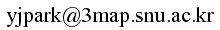

Contacts

Office
Room 315-1, Building 302, Seoul National University, Seoul, Korea
Research Interests
Geometric Modeling
Education
M.S.-Ph.D in Computer Science & Engineering
Seoul National University, 2016 - current
B.S. in Computer Science & Engineering
Pusan National University, 2012 - 2016
Award & Honors
- Merit-Based Scholarship, 2nd-grade (about $2000/semester), Pusan National University, 2012 - 2013.
- National Scholarship for Science and Engineering, Full tuition fee(about $2300/semester), Korea Scholarship Foundation, 2014 - 2015.
- 19th place on ACM-ICPC Asia Daejeon Regional Contest, 2014
- Top prize on Graduation Project, "Speed Big Data & Real-Time Predict Based Navigation", Pusan National University, 2015.
Publications
- 박영진, 홍규연, 김명수. (2019). "토러스 패치 기반의 정밀 근사를 이용한 자유곡면의 기하학적 처리". 컴퓨터그래픽스학회 논문지, 25(3), pp.93-103
- Q Youn Hong, Youngjin Park, Myung-Soo Kim, Gershon Elber. (2019). "Trimming offset surface self-intersections around near-singular regions". Computers & Graphics, 82, pp.84-94
- 서준오, 박영진, 김명수. "CT 영상을 이용한 하악 이동 경로 의 생성". HCI Korea 2019 학술대회, 제주, 대한민국, pp.193-196, 2019년 2월 13일 - 2019년 2월 16일
- 최승언, 박영진 외. "스프레드시트를 이용한 수학, 과학 융합학습의 실제". 서울:교육과학사, 2018
Projects
- 토러스기반의 바운딩 볼륨을 이용한 알고리즘의 가속화, 과학기술정보통신부, 2019 - 2022
- 환자맞춤형 치아교합 형상 및 동작 모델링 SW 시스템 개발, 과학기술정보통신부, 2017 - 2019
- 사각형 패치기반의 3D 모델링, 변형 및 처리 시스템, 한국연구재단, 과학기술정보통신부, 2016 - 2019
- 임플란트 수술 가이드 및 보철 설계를 위한 디지털 치과 시스템 개발, 과학기술정보통신부, 2016 - 2017
- 3D 어피어런스 매니퓰레이션 기반 영화/공영용 특수분장 마스크 제작 기술 개발, 문화체육관광부, 2016
Other Interest
Orchestras
- Con Brio Orchestra in PNU, Violin, Viola Principal and Cello, 2013 - 2015, Busan. [1]
[2]
[3]
[4]
- Chair(2013.09 - 2014.09)
- Concert master(2013.09 - 2014.02)
- Bambee Ensemble, Viola, 2015, Busan. [1]
- Seoul Digital Valley Orchestra, Viola Principal and Cello, 2016 - 2018, Seoul. [1]
- Phileo Orchestra, Viola, 2016, Seoul.
- U&I Philharmonic Orchestra, Viola Principal, 2018, Seoul [1] [2]
- Next Philharmonic Orchestra, Viola Principal, 2019, Seoul.
Solo
- Recital (Youngjin Park Violin-Viola Concert). 2015.12.29.
- Somewhere Over the Rainbow
- G. Gershwin, Summertime
- 연두해요
- R. Schumann, Dichterliebe 1 2 3 4 5 6 7
- La La Land OST, City of Stars
- Notting Hill OST, She
- 짱구는못말려 OST, 히로시의 회상
- Let It Snow!
- O Little Town of Bethlehem
- Disney Pinocchio OST, When You Wish Upon a Star
- Sky Castle OST, We All Lie
- IU, 밤편지
- 잔나비, 주저하는 연인들을 위해
- 김광진, 편지
- 악동뮤지션, 오랜날 오랜밤
- Kiki's Delivery Service OST, A Town With An Ocean View
- and so on..